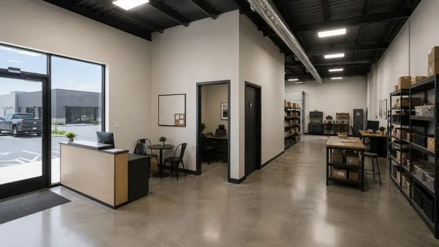

Flex space lease checklist: 10 things to verify before you sign

Most flex space lease problems aren't in the rent — they're in the details nobody verified before signing. We build, lease, and manage these buildings; this is the exact checklist we'd run as a tenant. Ten items, in the order they bite.
1. Total occupancy cost, not base rent
Get the base rate and the current NNN estimate and last year's actuals in one email. If any of those terms are new to you, read our plain-English NNN explainer first — it's the difference between comparing deals and comparing labels.
2. Permitted use — in the lease and at the city
Your operation must be allowed twice: by the lease's permitted-use clause and by the city's zoning. Retail sales, fitness, church assembly, and auto work are the common trip-ups in light-industrial zoning. Check the municipal code (most North Texas cities publish theirs online) or ask the city's planning department directly — and get future plans written into the clause now.
3. Power: panel size and phase
Look at the panel, not the brochure. Standard duty is fine for office-plus-storage; compressors, welders, CNC machines, or walk-in coolers usually want 3-phase. Our units ship with 3-phase for exactly this reason — adding it after the fact costs five figures.
4. Doors: count, size, and approach
A 12×12 grade-level door handles a box truck; a 12×14 handles most anything on rubber. Also walk the approach — can your truck actually line up with the door, or does a parking row block the angle?
5. Delivered condition, in writing
Office finish, restroom, HVAC tonnage, lighting, slab condition — listed in the lease, not described verbally. Anything absent from the list is your bill later.
6. HVAC responsibility
Who maintains and who replaces? A common structure: tenant maintains (filter changes, servicing), landlord handles replacement — but only if it's written. An orphaned 10-year-old unit becoming your problem in year two is the classic small-tenant horror story.
7. Signage rights
Storefront visibility only pays if you can put your name on it. Confirm the park's sign criteria, monument-sign availability, and who pays for panels.
8. Parking allocation
Small-bay parks share parking. If you run crews that stage vehicles overnight or a business with customer traffic, confirm your allocation and overnight rules — this is the most common inter-tenant friction in flex parks.
9. Escalations and options
Annual base-rent escalations of 3–4% are normal in this market. What matters more: a renewal option with defined terms, and — if you're growing — a right of first refusal on the adjacent bay (see our sizing guide on why tenants outgrow units faster than they expect).
10. Exit terms
Sublease and assignment rights (can you hand the space to a buyer if you sell the business?), holdover penalties, and the make-ready standard you owe at move-out. Read them before signing, when they're negotiable — not at exit, when they aren't.
FAQ
What is a permitted use clause?
The lease section defining what you may operate in the unit. Confirm your actual business — and future plans — are written into it, and that city zoning agrees.
How much power does a flex unit need?
Office-plus-storage runs on standard panels; serious equipment usually needs 3-phase. Verify panel size and phase before signing.
What should delivered condition include?
Office finish, restroom, HVAC, lighting, doors, and slab condition — in writing. Anything unlisted is your cost later.
Run this checklist on our buildings
We'll answer all ten in one conversation — specs, NNN estimates, sign criteria, and lease terms at Rockwall Flex Park.
Get the answers →